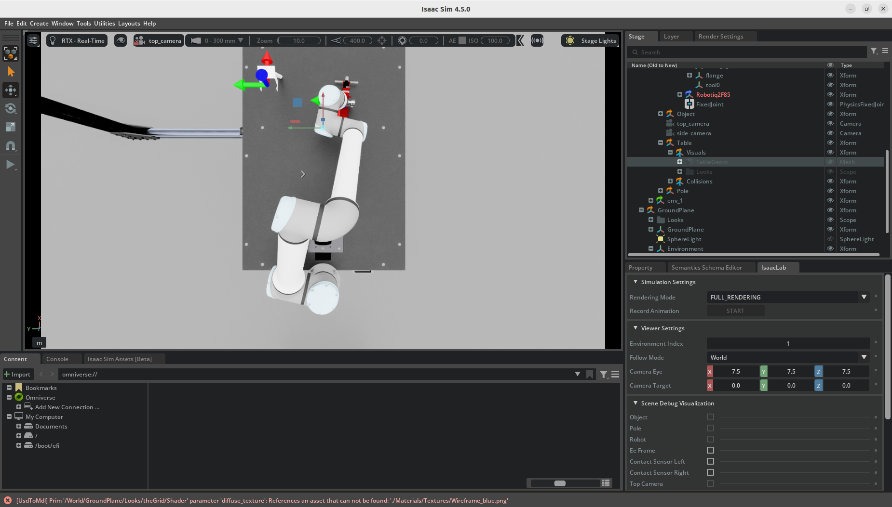
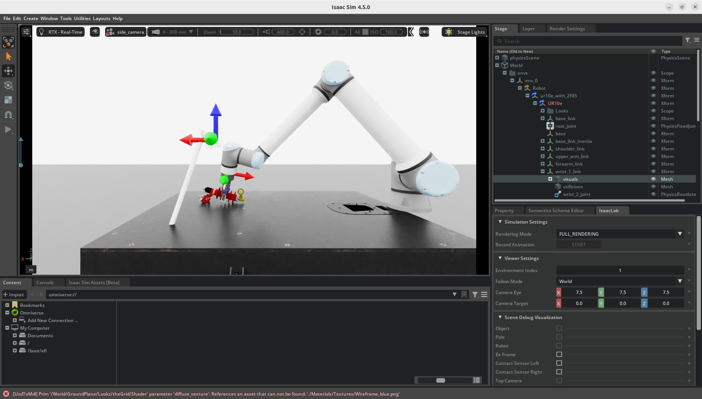
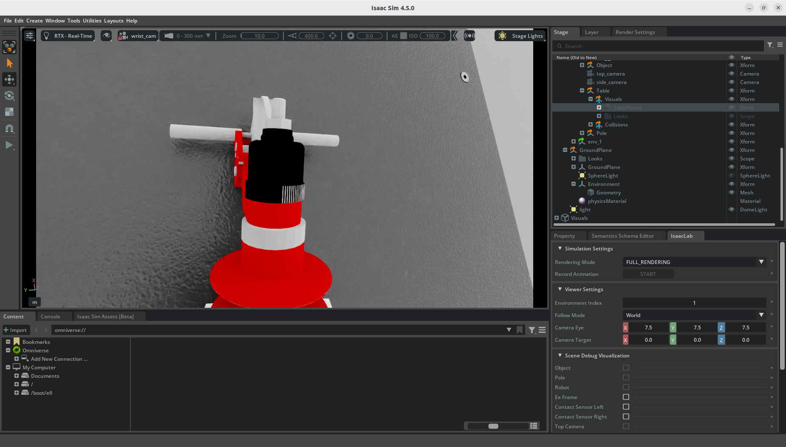
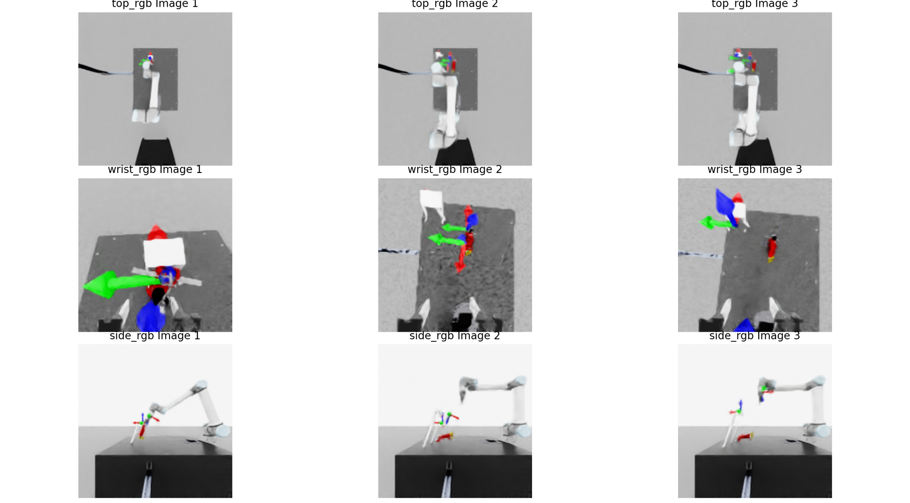

强化学习训练 · 合成数据生成 · Sim-to-Real
Isaac Sim 数字孪生场景
PPO 强化学习 · 93% 抓取
域随机化 · LeRobot 格式
多视角渲染 · Sim-to-Real
利用绝缘子、挂钩、台面、UR5e 机械臂、ROBOTIQ 2F-85 夹爪等资产，在 Isaac Sim 中搭建完整的高压线绝缘子挂接业务场景。完成数字孪生场景搭建、夹爪联调、contact sensor 集成与测试台架搭建。
完成 UR10_2f85 配置导入 Isaac Lab，处理多 root 节点导入问题；velocity/effort/stiffness/damping 参数调优实现稳定控制。
绝缘子 + 挂钩 pole + 台面完整场景，子 prim 坐标点系统用于条件判断和奖赏计算。
Robotiq 2f-85 集成 contact_sensor，Isaac Lab 调用并纳入 reward function 的 contact 逻辑处理。
搭建键盘遥操作测试台架和轨迹重放台架，支撑快速调试和人为抓取可行性分析。
基于 Isaac Lab 搭建 PPO 强化学习训练框架，设计状态空间、动作空间及多层级奖励函数。通过 Ray Tune 网格搜索 108 组超参，最终实现 抓取成功率 93%、放置成功率 82%。
| 训练配置 | 值 |
|---|---|
| 算法 | PPO (rsl_rl) |
| 并行环境 | Isaac Sim 2048+ 并行环境 |
| 迭代轮数 | 2000 轮 / 组超参 |
| 单组耗时 | 约 1 小时（单 GPU 满载） |
| 超参搜索 | Ray Tune Grid Search · 108 组 |
| 观测输入 | 质点坐标向量（非图像），4 层全连接 |
| 最终成功率 | 抓取 93% · 放置 82% |
基于训练收敛的策略模型及域随机化方案，批量生成 LeRobot 格式的仿真合成轨迹数据。数据集包含多视角（顶部、侧方、腕部）RGB 与深度视图、机械臂实时关节状态及动作指令。

顶部视角

侧方视角

腕部视角
| 字段 | 内容 |
|---|---|
| actions | 机械臂关节动作指令 |
| obs / joint_positions | 机械臂实时关节状态 |
| top_rgb / top_depth | 顶部摄像头 RGBA + 深度 |
| side_rgb / side_depth | 侧方摄像头 RGBA + 深度 |
| wrist_rgb / wrist_depth | 腕部摄像头 RGBA + 深度 |

HDF5 数据集可视化脚本输出